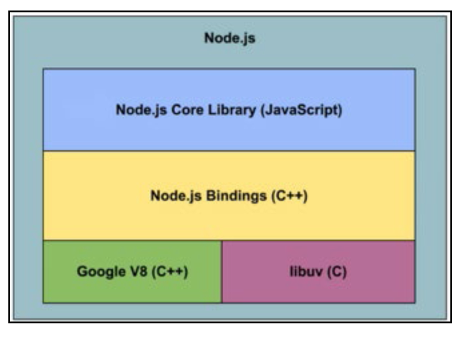

Node.js
Server-Side JavaScript for Backends, API Servers, and Web Apps |
|
| By: Bert Belder |
WHAT IS NODE?
First, a quick note: The terms "Node.js" and "Node" are used interchangeably. The official description according to the nodejs.org website is as follows:
"Node.js is a JavaScript runtime built on Chrome's V8 JavaScript engine."
Translation: Node runs on top of Google's open-source JavaScript engine called V8. It's written in C++ and is used in Google's Chrome browser. It's fast!
"Node.js uses an event-driven, non-blocking I/O model that makes it lightweight and efficient."
Translation: Node.js pairs JavaScript's naturally event-driven, asynchronous coding style with non-blocking I/O libraries for performing server tasks such as working with filesystems & databases. This pairing makes it easy to write fast, efficient, and non-blocking applications that would be difficult & complex to author in traditionally synchronous languages.
"Node.js's package ecosystem, npm, is the largest ecosystem of open source libraries in the world."
Translation: npm (name always lower-case) is the tool used to install and manage dependencies in the Node world as well as the main repository where public Node.js packages are registered. The later, with almost 200,000 packages and over 2 billion monthly downloads, has almost twice the number of packages of the next largest ecosystem, Maven. In addition to Node.js libraries, npm also lists more and more front-end packages, but that's a different topic!
NODE IS JAVASCRIPT ON THE SERVER
Node allows developers to write server-side applications in JavaScript. Server-side applications perform tasks that aren't suitably performed on the client, like processing and persisting data or files, plus tasks like connecting to other networked servers, serving web pages and pushing notifications. Seeing that JavaScript is an incredibly popular language with web and mobile front-end developers, the ability to use this same skill to program server-side tasks, in theory, increases a developer's productivity. In some cases it even allows the same code to be shared between client and server.
HOW DOES NODE WORK?
Synchronous vs asynchronous programming
C and Java traditionally use synchronous I/O, which means that when a program starts an I/O operation, the rest of the program stops until that operation is completed. You can get around this by writing multithreaded programs, but for some developers, writing these types of applications in a distributed networking environment can be daunting. Of course there is also the issue of the number of threads a system can actually spawn, and writing "thread-safe" code adds significant complexity to any codebase. Node, by contrast, is singlethreaded, but provides for asynchronous & non-blocking code by default.
Synchronous vs asynchronous: by analogySynchronous vs asynchronous: by analogy
In order to understand non-blocking I/O, let's picture a common scenario: ordering food at a restaurant.
A typical experience would be something like this:
- You sit at a table and the server takes your drink order.
- The server goes back to the bar and passes your order to a bartender.
- While the bartender is working on your drink, the server moves on to take another table's drink order.
- The server goes back to the bar and passes along the other table's order.
- Before the server brings back your drinks, you order some food.
- The server passes your food order to the kitchen.
- Your drinks are ready now, so the server picks them up and brings them back to your table.
- The other table's drinks are ready, so the server picks them up and takes them to the other table.
- Finally your food is ready, so server picks it up and brings it back to your table.
Basically every interaction with the server follows the same pattern.
- You order something from the server.
- The server hands your order off to the bar or kitchen, freeing him up to take new orders or to deliver orders that are completed.
- When your order is completed, the kitchen or bar alerts the server, and he delivers it to you.
Notice that at no point in time is the server doing more than one thing. He can only process one request at a time, but he does not wait around for the orders to be filled. This is how non-blocking Node.js applications work. In Node, your application code is like a restaurant server processing orders, and the bar/kitchen is the operating system handling your I/O calls.
Your single-threaded JavaScript application is responsible for all the processing up to the moment it requires I/O. Then, it hands the work off to the operating system, which processes the I/O and calls your application back when it's finished. For contrast, imagine if our restaurant were synchronous: every time the server took an order, he would wait for the bar/kitchen to finish the order before taking the next request. This would be very slow! This is how blocking I/O works.
Event loop concurrency model
Node leverages a browser-style concurrency model on the server. As we all know, JavaScript was originally designed for the browser where code execution is triggered by events such as mouse clicks or the completion of an Ajax request. Moved to the server, this same model allows for the idea of an event loop for server events such as network requests. In a nutshell, JavaScript waits for an event and whenever that event happens, a callback function occurs.
For example, your browser is constantly looping waiting for events like clicks or mouse-overs to occur, but this listening for events doesn't block the browser from performing other tasks. On the server this means that instead of a program waiting for a response from a database query, file access, or connection to an external API, it immediately moves on to the next unit of work until the event returns with a response. Instead of blocking the server waiting for I/O to complete, the event loop allows applications to process other requests while waiting for I/O results. In this way Node achieves multitasking more efficiently than using threads.
Event loop analogy: mail carrier
A mail carrier "loops" through the mailboxes on her route, checking each for new letters (events). In your postbox she finds a letter addressed to IBM; you are requesting a quote for their cloud backup service. She takes the letter, and when her loop takes her past IBM headquarters she drops it off. She does not wait for IBM's response, she continues on her loop, picking up & delivering other letters while IBM processes your request (does an I/O operation).
The next three times she passes IBM there is no response ready, so she continues on her loop delivering other letters. The fourth time she passes IBM, they have a response ready. She picks it up & delivers the quote to you. The response, addressed to the original sender, is like the callback, routed to the original caller with the response data (the quote).
Event loop code example
Let's look at a simple example of asynchronously reading a file. This is a two step process:
- The filename is passed to the OS (via Node and libuv)
- The readHandler callback function is executed with the response (a Buffer)
var fs = require('fs');
fs.readFile('my_file.txt', function readHandler(err, data)
{
if (err) throw err;
// convert the buffer to string and output it
console.log(data.toString());
});
The request to read the file goes through Node bindings to libuv. Then libuv gives the task of reading the file to a thread. When the thread completes reading the file into the buffer, the results goes to V8 and then through the Node bindings in the form of a callback function. In the callback shown the `data` argument is a Buffer with the file data.
Example of an http server using node:
var http = require('http');
http.createServer(
function (request, response)
{
response.writeHead(200, {'Content-Type': 'text/plain'});
response.end('Hello World\n');
}
).listen(8080);
console.log('Server running at http://localhost:8080/');
The "event >> callback" mechanism here is the same as in our read file example, but in one case we initiated the operation (read file) that results in an event being triggered, whereas in this example, the events are triggered in response to external input (an incoming HTTP request).
ARCHITECTURE
There are four building blocks that constitute Node. First, Node encapsulates libuvlibuv to handle asynchronous events and Google's V8 to provide a run-time for JavaScript. Libuv is what abstracts away all of the underlying network and file system functionality on both Windows and POSIX-based systems like Linux, Mac OSX and Unix. The core functionality of Node, modules like Assert, HTTP, Crypto etc., reside in a core library written in JavaScript. The Node bindings provide the glue connecting these technologies to each other and to the operating system. 
NODE PERFORMANCE CHARACTERISTICS
Everyone knows benchmarks are a specific measurement and don't account for all cases. Certainly, what and how you measure matters a lot. But there's one thing we can all agree on: at high levels of concurrency (thousands of connections) your server needs to become asynchronous and non-blocking. We could have finished that sentence with IO, but the issue is that if any part of your server code blocks, you're going to need a thread. At these levels of concurrency, you can't go about creating threads for every connection. So, the whole code path needs to be non-blocking and async, not just the IO layer. This is where Node excels. Some examples of Node performance benchmarks and related posts:
WHAT IS NODE GOOD FOR?
Web applications
Many modern web applications are SPAs (single page applications) that put most rendering and UI concerns in the client code, calling the server only to request or update data.
Reasons why:
- Single page applications most frequently request and send data (e.g. JSON) rather than rendered pages (html), thus payloads are smaller but more frequent. Node's asynchronous model excels at handling these high-frequency, smallpayload requests.
- Node's rich ecosystem of npm modules allows you to build web applications front to back with the relative ease of a scripting language that is already ubiquitously understood on the front end.
- Single Page Applications must be written in (or compiled to) JavaScript. A Node backend means the whole stack is in one language.
Examples of frameworks for Node:
Api servers and mobile backends
An I/O library at its heart, Node.js is a popular choice for APIs and mobile backends. Node's ease of use has been applied toward the classic enterprise application use case to be able to gather and normalize existing data and services.
Reasons why:
- As the shift toward hybrid mobile applications becomes more dominant in the enterprise, the re-use of code written in JavaScript on the client side can be leveraged on the server
- Node's rich ecosystem has almost every underlying driver or connector to enterprise data sources such as RDBMS, Files, NoSQL, etc. that would be of interest to mobile clients
- JSON, the de-facto standard format for API data interchange, is a representation of native JavaScript objects, so of course Node handles it easily. If it happens that you need to support another format (XML e.g.), there's probably a module for it.
Examples of mobile backends built with Node:
- LoopBack(Open-source framework)
- Parse(Proprietary)
- FeedHenry(Proprietary)
- Appcelerator Cloud Services(Proprietary)
- Restify(Open-source framework)
Iot servers
As more and more objects in the workplace, the home, and beyond get connected into the "Internet of Things," Node.js is emerging as the server technology of choice for many IoT platforms.
Reasons why:
- Sensors reporting temperature, vehicle speed, etc. can generate lots of data points, each one as small as a single number. Node.js is built to efficiently handle this sort of "many requests, small payloads" use-case.
- Node.js's popularity as a platform for building APIs means that its strengths and weaknesses here are well explored, and there are many mature solutions that fit the IoT problem.
Examples of open-source IoT servers built in Node:
HOW DO I INSTALL NODE?
Installers exist for a variety of platforms including Windows, Mac OS X, Linux, SunOS - and of course you can compile it yourself from source. Official downloads are available from the nodejs.org website:nodejs.org/en/download
HOW CAN I MAKE NODE USEFUL?
What is nmp?
Node Package Manager ("npm") is the command-line package manager for Node that manages dependencies for your application. npmjs.com is the public repository where you can obtain and publish modules.
How does nmp work?
In order for your Node application to be useful, it is going to need things like libraries, web and testing frameworks, data-connectivity, parsers and other functionality. You enable this functionality by installing specific modules via npm. npm comes bundled with Node. js (since v0.6.3) so you can start using it right away!
You can install any package with this command:
$ npm install <name of module>
Some popular and most used modules include:
express
A fast, unopinionated, minimalist web framework for Node. Express aims to provide small, robust tooling for HTTP servers, making it a great solution for single page applications, web sites, hybrids, or public HTTP APIs.
lodash
Lodash is a "toolbelt" utility library with methods for performing lots of common JavaScript tasks. It can be used stand-alone, in conjunction with other small libraries, or in the context of a larger framework
async
Async is a utility module which provides straightforward, powerful functions for working with asynchronous JavaScript. Although originally designed for use with Node, it can also be used directly in the browser. Async provides around 20 functions that include the usual 'functional' suspects (map, reduce, filter, each...) in addition to your async function.
request
A simplified HTTP request client. It supports HTTPS and follows redirects by default.
grunt
A JavaScript task runner that helps automate tasks. Grunt can perform repetitive tasks like minification, compilation, unit testing, linting, etc. The Grunt ecosystem is also quite large with hundreds of plugins to choose from. You can find the listing of plugins here.
socket.io
Socket.io makes WebSockets and real-time possible in all browsers and provides built-in multiplexing, horizontal scalability, automatic JSON encoding/decoding, and more.
mongoose
A MongoDB object modeling tool designed to work in an asynchronous environment. It includes built-in type casting, validation, query building, business logic hooks and more, out of the box.
WHAT IS NEW IN NODE V4.X?
After Node v0.10 came v0.12. Naturally v0.12 was followed by v4.0. What happened here?! io.js happened, and with it, Node got semantic versioning (semver).
Io.js
First some history: in 2015, a group of Node.js developers & core platform engineers were eager to start using the latest and greatest Node and V8 features, and unwilling to wait for them to be land in the joyent/node "master" release channel. So, they forked the Node.js project on GitHub. As the name "Node.js" was trademarked, they gave their fork the name "io.js" referencing the asynchronous I/O nature of Node. The fork was always meant to be temporary, and later in 2015 io.js was merged back into the main Node release channel, which now lives at on GitHub, and the next version of io.js/node was released as Node.js v4.0.0.
Along with the project merger came the organization of the official Node.js Foundation to serve the community. The foundation's mission is "to enable widespread adoption and help accelerate development of Node.js and other related modules through an open governance model..." Both IBM and StrongLoop were among the very first members of this organization and believe strongly in its mission.
Semver
When io.js was merged into Node.js, it brought with it semver, or semantic versioning. In addition to Node.js itself, many popular Node libraries use semver, so it's worth getting familiar with.
Semver is a common standard for release numbering, intended to add semantic meaning to the numbers so developers can know at a glance whether a version change is likely to break their build. Semver versions are three numbers in the form "MAJOR.MINOR. PATCH". For example, in 2.11.3, the major version is 2, the minor 11 and the patch 3. The meanings are as follows:
- MAJOR: incremented when releasing breaking API changes.
- MINOR: incremented when releasing new features or enhancements that don't break backward compatibility
- PATCH: incremented when releasing a bug-fix or other patch
This means if you are using version 3.0.0 of a library, you should be able to upgrade it to any version 3.*.* without your application breaking. (Note the "should!!") Semver ranges are used extensively in npm. Some common ones are tilde ranges (which fixates all but the last number, so ~1.2.3 will upgrade all the way to 1.2.9999 but not to 1.3) and caret ranges (which fixates only the first number, so ^1.2.3 will update to 1.999.999 but not to 2.0).
Node.js, in addition to following semver, has another bit of information encoded in the version number: whether or not a version is a Long Term Support release. Even-numbered major version numbers are LTS releases, odd-numbered major versions are not (they are supported in a stable capacity for six months, then superseded).
Long term support releases
In its early days, new Node.js releases came fast, and often brought with them breaking API changes. With 4.0, Node now has a predictable release schedule with LTS releases. LTS releases happen once per year on April first (v4.2 LTS is the exception, having been released in October). An LTS release will receive patches and bug fixes (no new features) for 18 months. After that it's retired to Maintenance mode and only updated with "critical bugs, critical security fixes, and documentation.
LTS releases allow companies and teams to build an application against a particular version of Node and be confident that a release won't take them by surprise in 3 months and force costly updates. This regular, predictable release schedule makes Node.js much more Enterprise friendly.
V8 upgrade
Moving from v0.12 to v4.0, Node jumped from V8 v3.28 to v4.5. V8 is the engine that actually interprets and runs the code in your program, so the main thing you'd notice if you updated versions & ran the same (Node v0.12 compatible) code is that it probably runs faster. That's not all that came with the new version of V8, however, it also brought with it several ES6 features and Typed Arrays.
Typed arrays
Typed Arrays (Uint8Array, Int16Array, Float32Array etc.) are not directly accessible in Node.js, but from version 4 they back the Buffer class. The main difference from the old version is that new Buffers are zeroed out upon initialization. If you don't know what any of that means, don't worry, you're not likely to come across it very frequently! Typed Arrays allow for better optimization and efficient handling of Buffer data.
Es6 features
First of all, what is ES6 (aka ES2015)? ES stands for "ECMAScript" and is used chiefly to refer to versions of the JavaScript language standard, not implementations of JavaScript. ES2015 is a synonym for ES6. Unlike most languages, there are many large, competing JS interpreters (V8 for Chrome, SpiderMonkey for Firefox, Chakra for Internet Explorer, etc), and this means there is never one canonical set of supported features. ES2015 basically means "modern JavaScript as it exists in 2015." In the future, ES versions will be incremented annually. Let's examine some key ES6 features:
Generators
Generators (and iterators) are one of the most talked-about features of ES6. In the simplest terms, generators are special functions that return iterators. Iterators are objects that implement an interface allowing them to return many values, one after the next, and report when they have reached the end of their available values. This is very similar to the Iterable interface in Java. To return repeatedly, generator functions use the new yield keyword instead of return. When invoked as an iterator, a generator will run until it gets to yield, return that value, then pick up from that point when it's called again.
function* myGenerator()
{
yield 1;
yield "hello world";
}
var gen = myGenerator();
console.log(gen.next().value); // 1
console.log(gen.next().value); // "hello world"
var last = gen.next();
console.log([last.value, last.done]); // [undefined, true]
For iterating over a generator, it usually makes more sense to use for...of, another new ES6 feature:
//.. generator set up as above
for(foobar of gen)
{
console.log(foobar);
} // output:
// 1
// "hello world"
Although iteration is the most obvious use of generators, they are being used just as much (if not more) to create creative new mechanisms for asynchronous flow control. The concepts here can be confusing and it's not crucial that you master them right away, just be aware that generators are used for far more than just iteration.
Arrow functions
Though Object Oriented patterns are very common in JavaScript, Functional Programming paradigms are becoming more and more popular in the JS community. In FP, one writes functions very frequently (sometimes one per line). This fact is partly responsible for the new, shorter, arrow function syntax for creating anonymous functions in ES6. Arrow functions (in most cases) allow the omission of curly braces, parentheses, and the "return" keyword.
Consider the following code to get the total of the squares of just the odd numbers in an array:
var squareTotals = [1,2,3,4,5]
.filter(function(n){ return n % 2; })
.map(function(n){ return n * n; })
.reduce(function(sum, n){ return sum + n; });
// squareTotals === 35
Readability is greatly increased when short functions like this are written with "fat arrow" syntax (arrow functions):
var squareTotals = [1,2,3,4,5]
.filter(n => n % 2)
.map(n => n * n)
.reduce((sum, n) => sum + n);
Native promises
Promises are a wrapper around callbacks that allow programmers to write asynchronous code in a synchronous-looking way. Code written with promises is frequently easier to reason about and requires less nesting.
Without promises:
readJsonFile('urls.json', function(err, data)
{
var url = //get first URL
if(err) return handleError(err);
getWebpage(url, function(err, response)
{
if(err) return handleError(err);
parseHtml(response.body, function(err, html)
{
if(err) return handleError(err);
writeHtmlToFile(html, function(err)
{
if(err) return handleError(err);
console.log('done');
});
});
});
});
With promises (promise creation code omitted, this just shows consuming promises):
readJson('urls.json') // returns a Promise
.then(getWebpage)
.then(parseHtml)
.then(writeHtmlToFile)
.then(function()
{
console.log('done');
})
.catch(handleError);
Many more!
There are many more new ES6 features than the three described here. For a more comprehensive overview, be sure to read the Node. js docs on ES6, and for a survey of all ES6 features (not just those in Node 4.0) there is a great GitHub repo outlining the additions.
NODE API GUIDE
Below is a list of the most commonly used Node APIs. For a complete list and for an APIs current state of stability or development, please consult the Node API documentation.
Buffer
Functions for manipulating, creating and consuming octet streams, which you may encounter when dealing with TCP streams or the file system. Raw data is stored in instances of the Buffer class. A Buffer is similar to an array of integers but corresponds to a raw memory allocation outside the V8 heap. A Buffer cannot be resized.
Child process
Functions for spawning new processes and handling their input and output. Node provides a tri-directional popen(3) facility through the child_process module.
Cluster
A single instance of Node runs in a single thread. To take advantage of multi-core systems, the user will sometimes want to launch a cluster of Node processes to handle the load. The Cluster module allows you to easily create child processes that all share server ports.
Cripto
Functions for dealing with secure credentials that you might use in an HTTPS connection. The Crypto module offers a way of encapsulating secure credentials to be used as part of a secure HTTPS net or http connection. It also offers a set of wrappers for OpenSSL's hash, hmac, cipher, decipher, sign and verify methods.
Debugger
You can access the V8 engine's debugger with Node's built-in client and use it to debug your own scripts. Just launch Node with the debug argument (node debug server.js). A more feature-filled alternative debugger is node-inspector. It leverages Google's Blink DevTools, allows you to navigate source files, set breakpoints and edit variables and object properties, among other things.
Events
Contains the EventEmitter class used by many other Node objects. Events defines the API for attaching and removing event listeners and interacting with them. Typically, event names are represented by a camel-cased string; however, there aren't any strict restrictions on case, as any string will be accepted. Functions can then be attached to objects, to be executed when an event is emitted. These functions are called listeners. Inside a listener function, the object is the EventEmitter that the listener was attached to. All EventEmitters emit the event newListener (when new listeners are added) and removeListener (when a listener is removed).
To access the EventEmitter class use:
require('events').EventEmitter
emitter.on(event, listener) adds a listener to the end of the listeners array for the specified event. For example:
server.on('connection', function (stream)
{
console.log('someone connected!');
});
This calls returns emitter, which means that calls can be chained.
Filesystem
The Filesystem API contains methods to manipulate files on disk. In addition to read and write methods, there are methods to create symlinks, watch files, check permissions and other file stats, etc.. The major point of note here is that as I/O operations, the core filesystem methods are asynchronous. There are synchronous versions of most methods as well (e.g. readFileSync in addition to readFile), but these synchronous methods should be avoided when performance is a consideration! Node.js' asynchronous nature depends on the event loop continuing to loop; if it's blocked for a synchronous I/O operation, much of Node's speed is lost.
Globals
Globals allow for objects to be available in all modules. (Except where noted in the documentation.)
Http
HTTP is the most important and most used module for a web developer. It allows you to create HTTP servers and make them listen on a given port. It also contains the request and response objects that hold information about incoming requests and outgoing responses. You also use this to make HTTP requests from your application and do things with their responses. HTTP message headers are represented by an object like this:
{
'content-length': '123',
'content-type': 'text/plain',
'connection': 'keep-alive',
'accept': '*/*'
}
In order to support the full spectrum of possible HTTP applications, Node's HTTP API is very low-level. It deals with stream handling and message parsing only. It parses a message into headers and body but it does not parse the actual headers or the body.
Modules
Node has a simple module loading system. In Node, files and modules are in one-to-one correspondence. As an example, foo.js loads the module circle.js in the same directory.
The contents of foo.js:
require('events').EventEmitter
emitter.on(event, listener) adds a listener to the end of the listeners array for the specified event. For example:
var circle = r equire('./circle.js');
console.log( 'The area of a c ircle of radius 4 is '
+ c ircle.area(4));
The contents of circle.js:
var PI = Math.PI;
exports.area = function (r)
{
return PI * r * r;
};
exports.circumference = function (r)
{
return 2 * PI * r;
};
The module circle.js has exported the functions area() and circumference(). To add functions and objects to the root of your module, you can add them to the special exports object. Variables local to the module will be private, as though the module was wrapped in a function. In this example the variable PI is private to circle.js.
Net
Net is one of the most important pieces of functionality in Node core. It allows for the creation of network server objects to listen for connections and act on them. It allows for the reading and writing to sockets. Most of the time, if you're working on web applications, you won't interact with Net directly. Instead you'll use the HTTP module to create HTTP-specific servers. If you want to create TCP servers or sockets and interact with them directly, you'll want to work with the Net API.
Process
The Process object is used for accessing stdin, stdout, command line arguments, the process ID, environment variables, and other elements of the system related to the currently-executing Node processes. It is an instance of EventEmitter. Here's example of listening for uncaughtException:
process.on('uncaughtException', function(err)
{
console.log('Caught exception: ' + err);
});
setTimeout(function()
{
console.log('This will still run.');
}, 500);
// Intentionally cause an exception, but don't catch it.
nonexistentFunc();
console.log('This will not run.');
Repl
Stands for Read-Eval-Print-Loop. You can add a REPL to your own programs just like Node's standalone REPL, which you get when you run Node with no arguments. REPL can be used for debugging or testing.
Stream
Stream is an abstract interface for streaming data that is implemented by other Node objects, like HTTP server requests,and even stdio. Most of the time you'll want to consult the documentation for the actual object you're working with rather than looking at the interface definition. Streams are readable, writable, or both. All streams are instances of EventEmitter.
Util
The Util API contains various utility methods, mostly for metatasks like logging and debugging. It's included here to highlight one method: inherits. Constructor inheritance can be a bit unwieldy in JavaScript; util.inherits makes such code a bit easier to write (and read).
DEVELOPER TOOLS FOR NODE
Below are some key tools widely adopted in the enterprise and in the community for developing Node applications:
Development environments
| PRODUCT/PROJECT | FEATURES/HIGHLIGHTS |
|---|---|
| WebStorm | Code analysis · Cross-platform · IntelliJ-based |
| Sublime Text | Goto anything · Customizable · Cross-platform |
| Atom | Built on JavaScript · Extensible · Maintained by GitHub |
| Nodeclipse | Open source · Built on Eclipse |
| Cloud9 IDE | Cloud-based · Collaborative · Debug and deploy |
| Visual Studio | Matches all elements with tag name F that are preceded by any sibling of tag name E. |
Application performance monitoring
| PRODUCT/PROJECT | FEATURES/HIGHLIGHTS |
|---|---|
| StrongLoop Arc | Error tracing · Event loop response times · Slowest endpoints |
| New Relic | Error rates · Transaction response times · Throughput monitoring |
| AppDynamics | Error tracing · Endpoint response time · Historical metrics |
| Keymetrics | CPU monitoring · Load balancing · Exception reporting |
Debugging
| PRODUCT/PROJECT | FEATURES/HIGHLIGHTS |
|---|---|
| V8 Debugger | Manual code injection · Breakpoints · Event exception handling |
| Node Inspector | Google Blink Dev-Tools based · Breakpoints · CPU & memory Profiling |
| Cloud9 IDE | Code analysis · Cross-platform · VCS integration |
| WebStorm | Code analysis · Cross-platform · VCS integration |
| Nodeclipse | Code completion · Built-on Eclipse · Tracing and breakpoints |